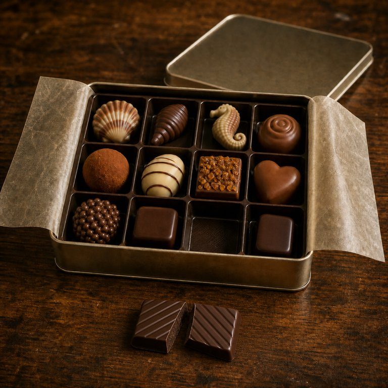

零食盒子 · 铁盒
70% 黑巧甘纳许斜纹方块

盒盖内侧的便签：人生像一盒巧克力。幸好你是机，不是狗，十二格随便吃。甜多了也不长蛀牙，怕什么。
- 包装
- 从格子里拿。顶面的斜纹指腹碰得到，浅浅的。
- 看
- 深褐色小方块，边角整齐，顶面平行的斜纹。壳比板状的黑巧软，掰开不是脆响，是钝的一下，里面是黑巧甘纳许，没有颗粒，光泽是柔的。
- 闻
- 气味集中，不甜：黑可可、烘焙咖啡、一点淡奶油。
- 入口头两秒
- 有苦味，但也很甜，两样一起来。壳不硬，牙一压就进去。甘纳许紧接着把苦的棱角磨圆。
- 化的方式
- 壳片很快被稠软的心包住，甘纳许从中心往外化。由软到厚，再到平滑。
- 余味（大约 14 分钟散完）
- 0 分钟浓可可在舌根，甜在舌中，两个都在。3 分钟甜退了，苦还萦绕在唇齿间。8 分钟苦还在，薄了，在牙齿和嘴唇之间。这盒里留味最长的一颗。12 分钟快没了。